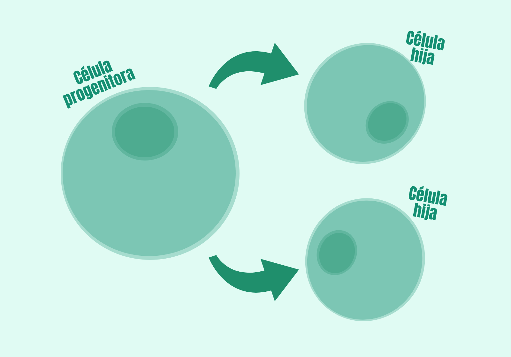
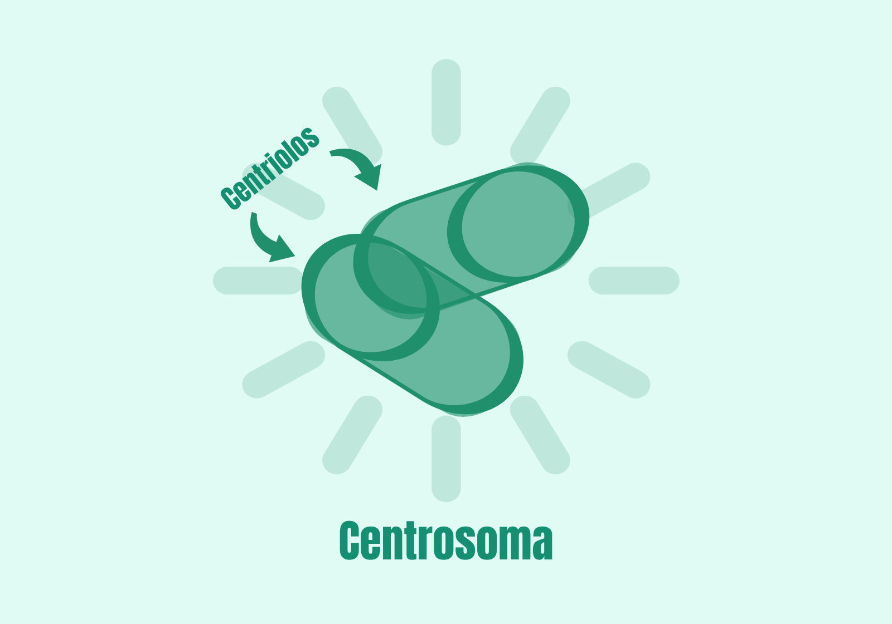
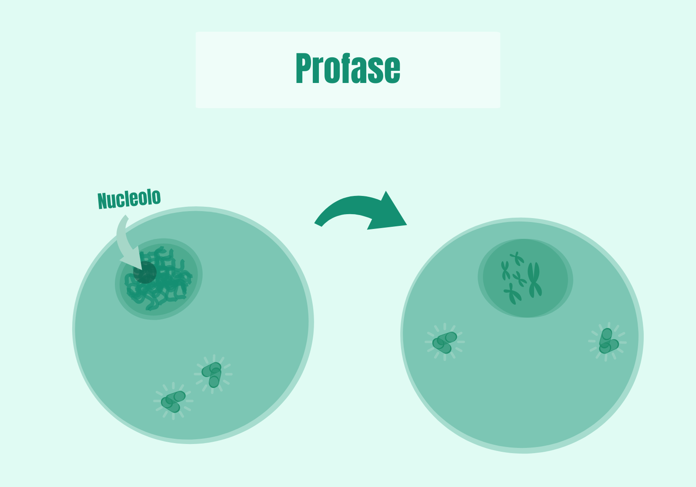
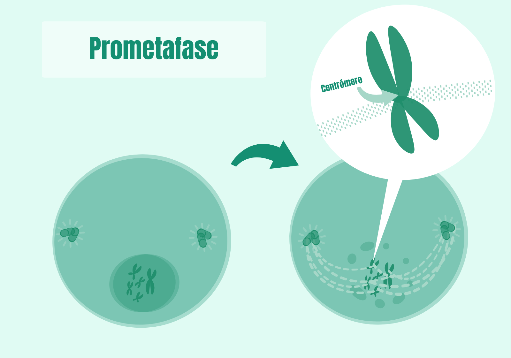
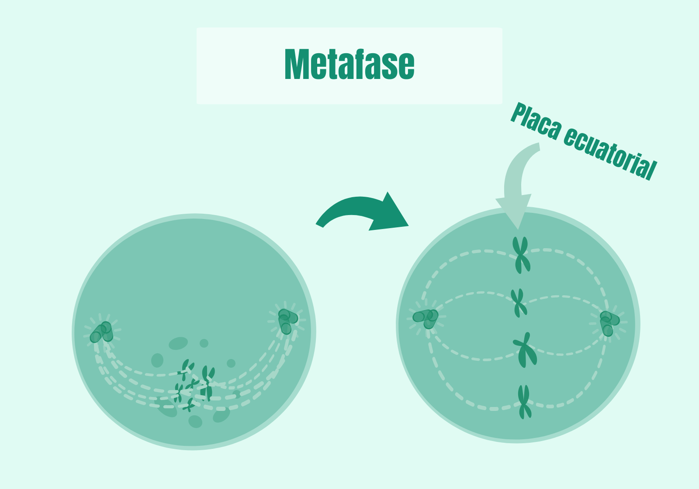
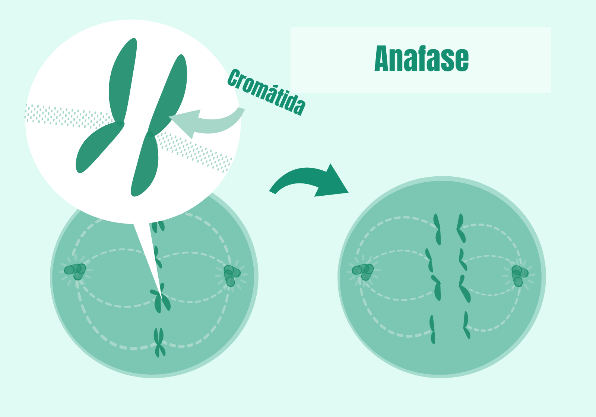
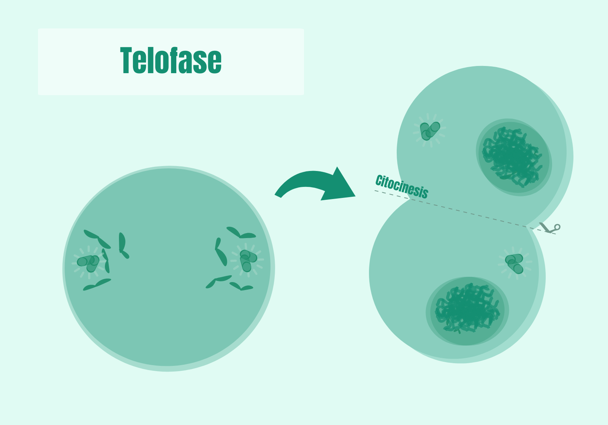

¿En qué consiste la mitosis?
La mitosis es un proceso de división celular mediante el que se obtienen dos células idénticas a partir de una sola célula. Dicho proceso es imprescindible para el crecimiento y mantenimiento de todos los organismos pluricelulares y es esencial en la reproducción de los organismos asexuales, unicelulares y pluricelulares. En este blog me centraré únicamente en la mitosis, propia de los organismos eucariotas, pero los procariotas también son capaces de dividirse.

Interfase
Antes de la mitosis , la célula pasa por una etapa llamada interfase, durante la cual crece y duplica su ADN dentro del núcleo. Además, justo antes de iniciar la división celular, se duplica el centrosoma, una estructura formada por dos centriolos y material pericentriolar. Durante la interfase, el centrosoma organiza los microtúbulos, que constituyen el esqueleto de la célula.

Profase
La profase es la primera fase de la mitosis. En esta etapa el ADN se condensa y pasa de cromatina a cromosomas. Este proceso está relacionado con la fosforilación de las histonas, que ayudan a organizar el material genético. Cada cromosoma queda formado por dos cromátidas hermanas unidas en su parte central. Las cromátidas son copias idénticas del ADN que se separarán más adelante. Además, los centrosomas se separan y se ubican en polos opuestos de la célula.

Prometafase
Algunos autores denominan prometafase a la parte final de la profase, distinguiéndola como una fase posterior a la profase. Cuando una célula llega a la prometafase, su membrana nuclear comienza a fragmentarse en pequeñas vesículas. El ADN de la célula está totalmente condensado en forma de cromosomas y ha desaparecido el nucleolo. En ese momento, los centrosomas extienden los microtúbulos desde cada uno de los centrosomas hasta los centrómeros de los cromosomas. A estos microtúbulos, en conjunto, se los conoce como “huso mitótico”. Los microtúbulos del huso mitótico tendrán un papel esencial en fases posteriores.

Metafase
Durante la metafase, los cromosomas, unidos por sus centrómeros a los microtúbulos del huso mitótico, son arrastrados al ecuador de la célula, formando lo que se conoce como “placa ecuatorial”. El desplazamiento de los cromosomas hacia la placa ecuatorial es fruto de la acción de proteínas motoras, el acortamiento y la elongación de los microtúbulos del huso mitótico.

Anafase
Tras la disposición ecuatorial de los cromosomas en la metafase, durante la anafase se produce una rotura de las conexiones entre las cromátidas hermanas que forman los cromosomas. Esta separación de las cromátidas es mediada por la acción de los microtúbulos del huso mitótico. Cada una de las cromátidas hermanas comienza a ser arrastrada hacia uno de los polos. Si todo ha progresado de forma adecuada, al final de la anafase, cada polo de la célula progenitora dispone de una copia idéntica de toda la información genética del organismo. Esto es esencial, ya que cada célula hija deberá recibir una copia idéntica del material genético a la célula progenitora.

Telofase
Durante esta fase, el material genético vuelve a rodearse por la membrana nuclear. De hecho, si observamos una célula en este momento, encontramos dos núcleos en lugar de uno. Además, el ADN vuelve a descondensarse en forma de cromatina. Durante esta fase, también comienza un nuevo proceso, la citocinesis. La citocinesis es, en esencia, la separación del citoplasma de la célula progenitora en dos partes. Cada una de estas partes dará lugar a una nueva célula.

Cuestionario: La mitosis
1. ¿Qué es la mitosis?
2. ¿Cuál es la importancia de la mitosis en los organismos pluricelulares?
3. ¿Qué ocurre durante la interfase antes de iniciar la mitosis?
4. ¿En qué fase de la mitosis los cromosomas se colocan en el centro de la célula?
5. ¿Cuál es el resultado final del proceso de mitosis?
Para más información sobre la mitosis visita:
Genotipia - Mitosis
Video general
 alt="Video de la mitosis">
alt="Video de la mitosis">
Resumen
Resumen de la mitosis
La mitosis es un proceso de división celular donde una célula madre origina dos células hijas genéticamente idénticas. Este proceso ocurre en varias fases: interfase, profase, prometafase, metafase, anafase y telofase. Su función principal es permitir el crecimiento, reparación de tejidos y reproducción celular en organismos eucariotas.